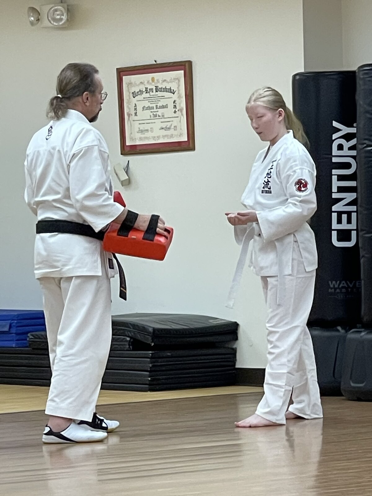
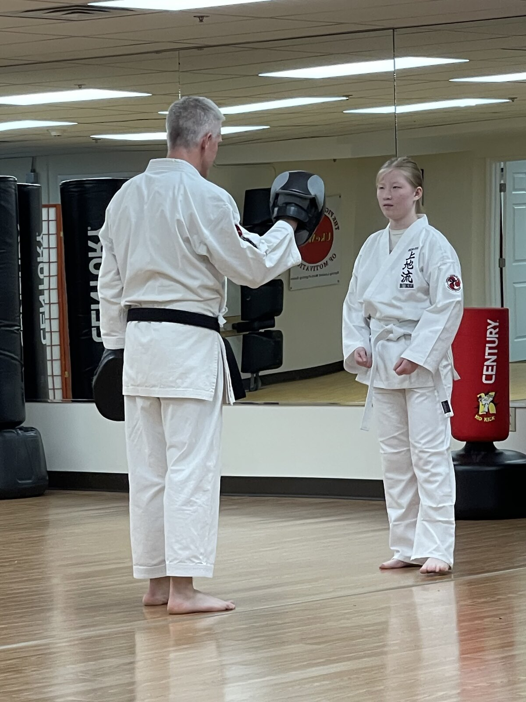
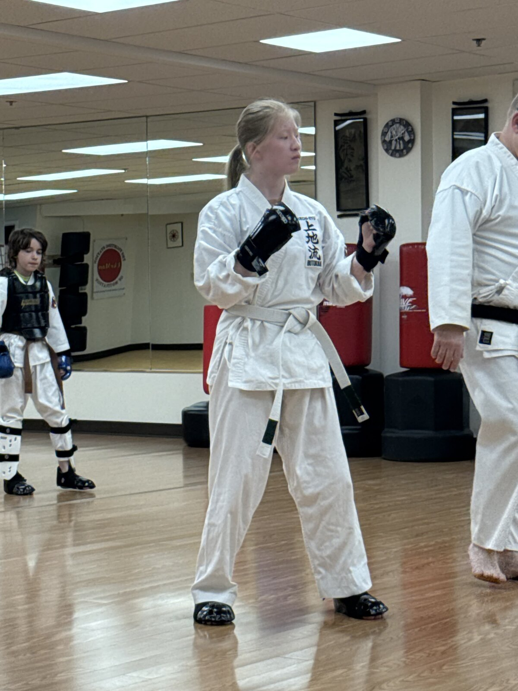
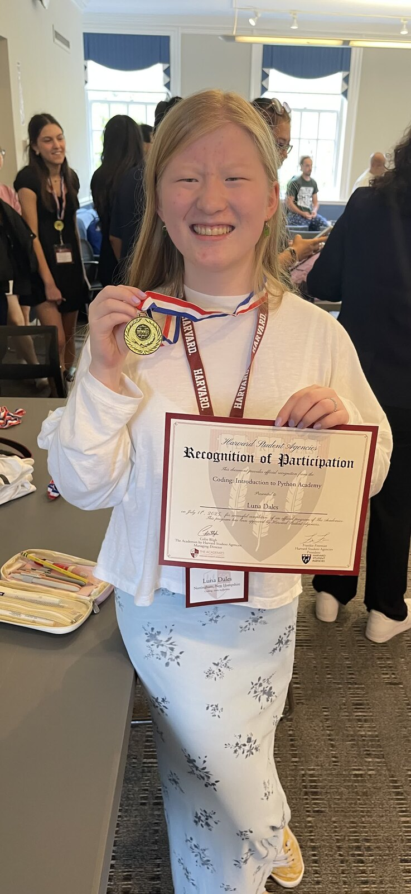
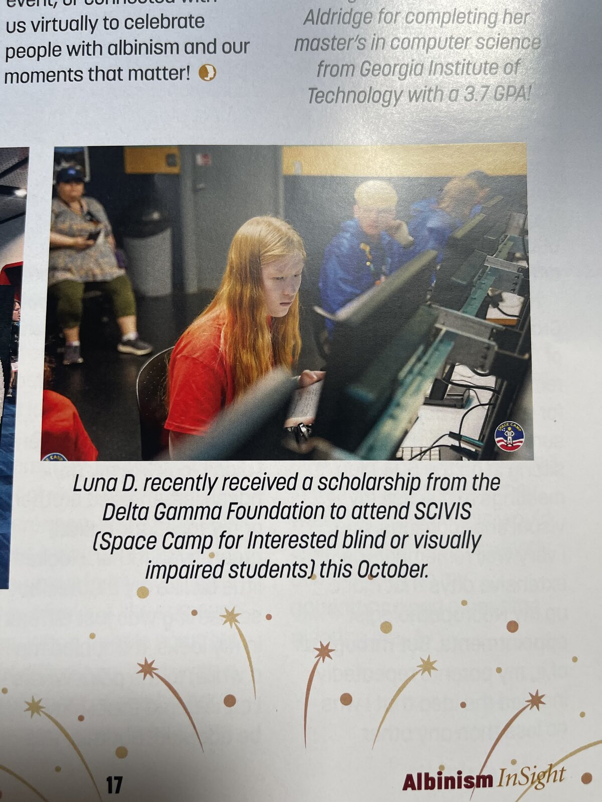

About me
Hi, I’m Luna Dales.
I’m a student who wants to understand how rockets work—and help more people take part in space exploration.
Building, testing, and learning
I’m a high school student at Virtual Learning Academy Charter School in New Hampshire, graduating in 2027. I’m interested in aerospace engineering and computer science. My projects combine rocket construction, flight-computer hardware and software, simulation, soldering, and 3D printing.
Through Space Camp for Interested Visually Impaired Students, I’ve explored astronaut training and simulated space missions. Those experiences helped shape my interest in spacecraft and interfaces that accommodate a broader range of human abilities. I’m also planning an accessible shopping app for people with low vision.
Outside engineering, I practice martial arts, help teach younger students, lead a teen book club through NOAH, and crochet items for donation.
Beyond the workbench
Practice, learning, and recognition
Select a photo to open it at full size.










My resume
Learn more about my education, engineering projects, activities, and skills.